a)
Naszkicujmy wykres funkcji g(x)=|x|
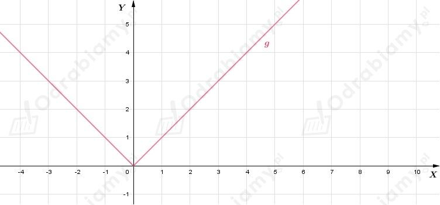
Z treści zadania wiemy, że w przedziale ⟨-1;1) wykres funkcji f pokrywa się z wykresem funkcji g.
Wiemy również, że funkcja f jest okresowa i jej okres wynosi 2. Zatem wykres funkcji f możemy naszkicować następująco
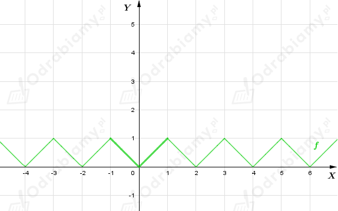
b)
Naszkicujmy wykres funkcji g(x)=x
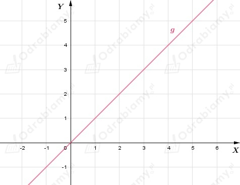
Z treści zadania wiemy, że w przedziale ⟨-1;1) wykres funkcji f pokrywa się z wykresem funkcji g.
Wiemy również, że funkcja f jest okresowa i jej okres wynosi 2. Zatem wykres funkcji f możemy naszkicować następująco
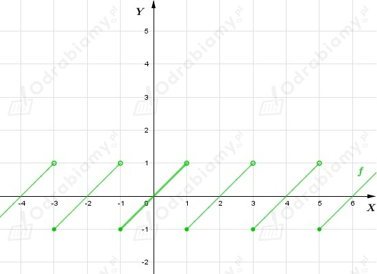
c)
Naszkicujmy wykres funkcji g(x)=1-x2
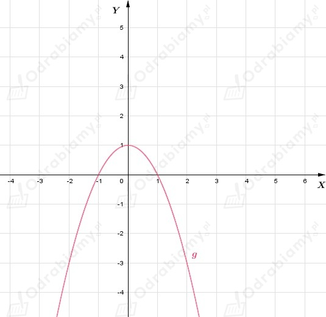
Z treści zadania wiemy, że w przedziale ⟨-1;1) wykres funkcji f pokrywa się z wykresem funkcji g.
Wiemy również, że funkcja f jest okresowa i jej okres wynosi 2. Zatem wykres funkcji f możemy naszkicować następująco
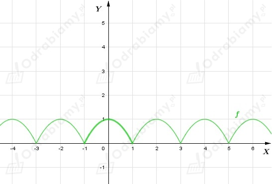
d)
Naszkicujmy wykres funkcji g(x)=x2-2x
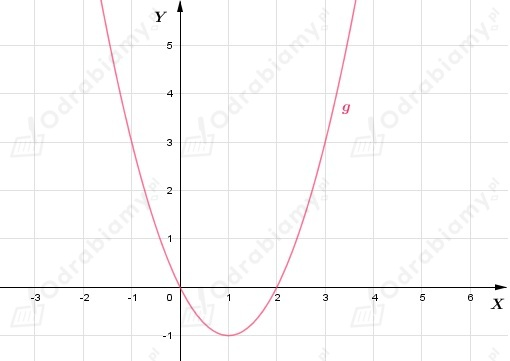
Z treści zadania wiemy, że w przedziale ⟨-1;1) wykres funkcji f pokrywa się z wykresem funkcji g.
Wiemy również, że funkcja f jest okresowa i jej okres wynosi 2. Zatem wykres funkcji f możemy naszkicować następująco
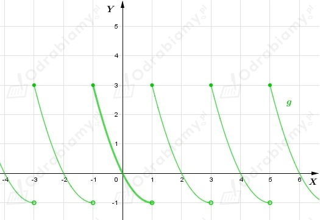
Naszkicujmy wykres funkcji g(x)=|x-1|-2.
Wykres funkcji g powstaje przez przesunięcie wykresu funkcji y=|x| o 1 jednostkę w prawo i 2 jednostki
w dół (o wektor [1,-2]).
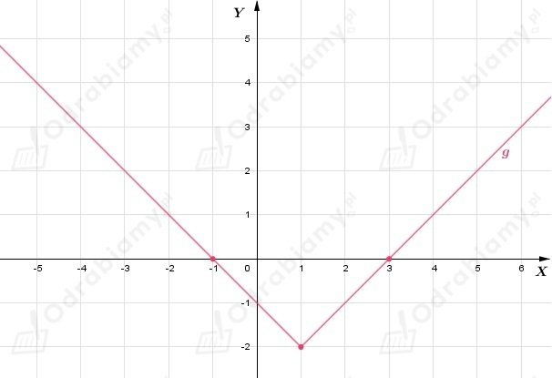
a)
Z treści zadania wiemy, że wykres funkcji f pokrywa się z wykresem funkcji g w przedziale ⟨-1; 3). Funkcja f jest okresowa i jej okres wynosi 4.
Zatem wykres funkcji f możemy naszkicować następująco
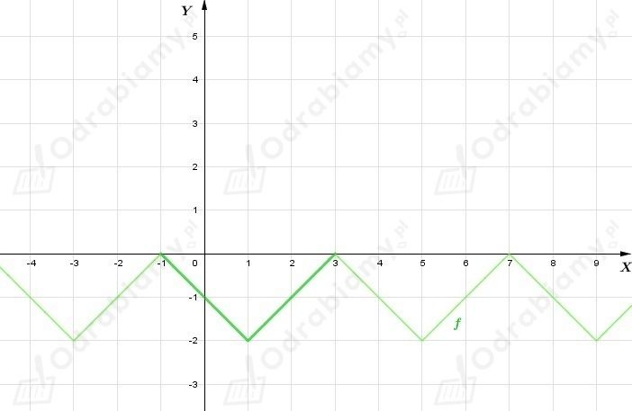
b)
Z treści zadania wiemy, że wykres funkcji f pokrywa się z wykresem funkcji g w przedziale ⟨0; 4). Funkcja f jest okresowa i jej okres wynosi 4.
Zatem wykres funkcji f możemy naszkicować następująco
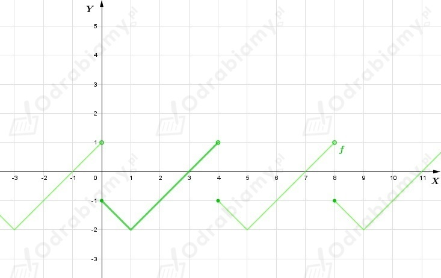
c)
Z treści zadania wiemy, że wykres funkcji f pokrywa się z wykresem funkcji g w przedziale (-2; 2〉. Funkcja f jest okresowa i jej okres wynosi 4.
Zatem wykres funkcji f możemy naszkicować następująco
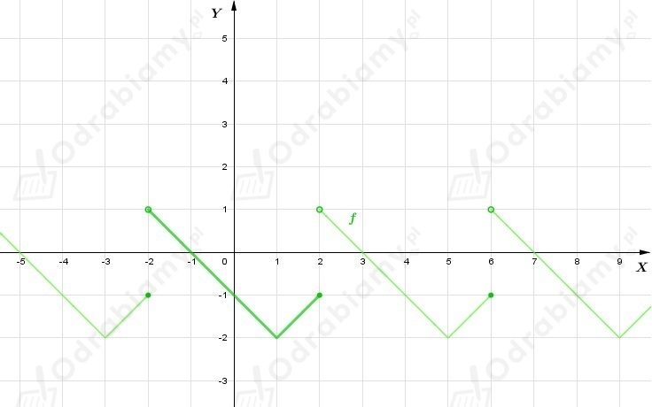
d)
Z treści zadania wiemy, że wykres funkcji f pokrywa się z wykresem funkcji g w przedziale (-4; 0〉. Funkcja f jest okresowa i jej okres wynosi 4.
Zatem wykres funkcji f możemy naszkicować następująco
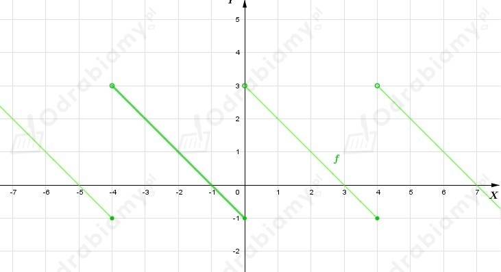
a)
W tym zadaniu, opierając się na wykresie funkcji f, należy obliczyć sumę wszystkich rozwiązań równania f(x)=1, które należą do przedziału ⟨0; 20〉.
Zauważmy, że skoro T=4, to bazując na fragmencie wykresu funkcji f, który znajduje się
w przedziale ⟨0; 4〉 możemy wywnioskować, że jeżeli w tym przedziale f(x)=1 dla x=1 lub x=3, to dla całego wykresu funkcji okresowej dostajemy
Możemy uogólnić to rozwiązanie do jednego i zapiszemy
Zatem rozwiązania powyższego równania należące do przedziału ⟨0; 20〉, to liczby
ze zbioru {1, 3, 5, 7, 9, ..., 15, 17, 19}.
Chcąc obliczyć sumę tych rozwiązań zauważmy zależność występującą pomiędzy tymi liczbami. Suma pierwszej i ostatniej liczby jest równa 20, drugiej i przedostatniej również wynosi 20. Idąc tym tokiem rozumowania widzimy, że dostajemy łącznie 5 takich par liczb, które w sumie dają liczę 20.
Wobec tego
b)
W tym zadaniu, opierając się na wykresie funkcji f, należy obliczyć sumę wszystkich rozwiązań równania f(x)=4, które należą do przedziału ⟨0; 400〉.
Zauważmy, że skoro T=4, to bazując na fragmencie wykresu funkcji f, który znajduje się
w przedziale ⟨0; 4〉 możemy wywnioskować, że jeżeli w tym przedziale f(x)=4 dla x=0 lub x=4, to dla całego wykresu funkcji okresowej dostajemy
Zatem rozwiązania powyższego równania należące do przedziału ⟨0; 400〉, to liczby
ze zbioru {0, 4, 8, 12, 16, ..., 392, 396, 400}.
Wobec tego
Łącząc w pary pierwszą i ostatnią liczbę z sumy, drugą i przedostatnią dostajemy w każdym przypadku
liczbę 101. Takich par mamy tutaj 50, więc suma cyfr od 1 do 100, to iloczyn liczb 101 i 50 (101·50).
Wiemy, że [x] - największa liczba całkowita nie większa od x, zatem
Z powyższych obliczeń możemy zauważyć, że dla dowolnej liczby całkowitej x funkcja f przyjmuje wartość równą 0. Natomiast w pozostałych przypadkach wartość funkcji f jest z przedziału (0,1).
Wykres funkcji f
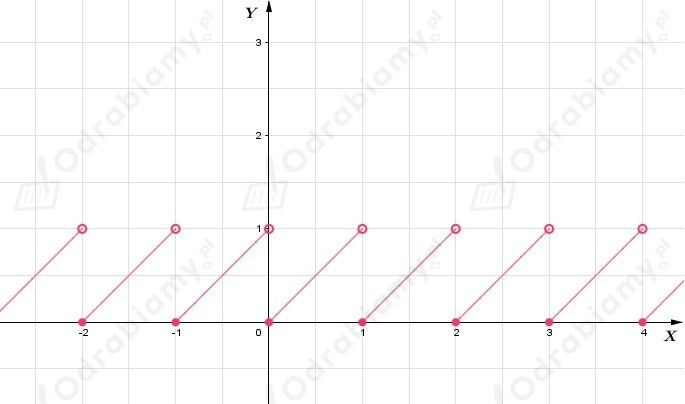
Z wykresu funkcji f możemy odczytać, że okres podstawowy funkcji jest równy 1 (T=1).
a)
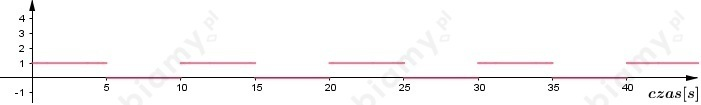
b)
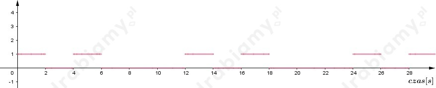